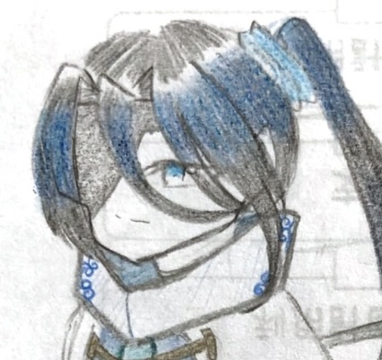
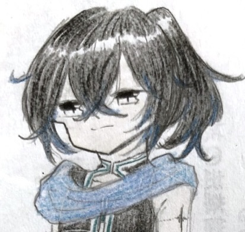
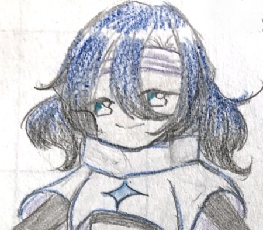

幻想種
vizion

ツェアシュテー
研究により生み出された。能力をうまく操れず周りから出来損ないと言われ生きてきた。回に救われたため、カイのことをしたっている。

カイ
研究所を壊すために旅をする。元は気さくな性格だった。研究所には向かったら記憶を消されこの状態になった。

タドミール
研究により生み出された。ホワホワしてる。面白いことしかしないので研究所の中では問題児だった。カイが面白そうなことしてるので仲間になった。